Comparsas
Fazer música é uma magia que trouxas não entendem
Site destinado à lembrança de nossos amigos comparsas, que foram companheiros, que lutaram conosco e nos acompanharam nas risadas, nas mijadas e no sofrimento de fazer música.
A comparsa Raquel passou no vestibular e precisou viajar. Sentiremos saudades por sua ida. Foi uma integrante importante para o grupo. Ela executava o instrumento Flauta.
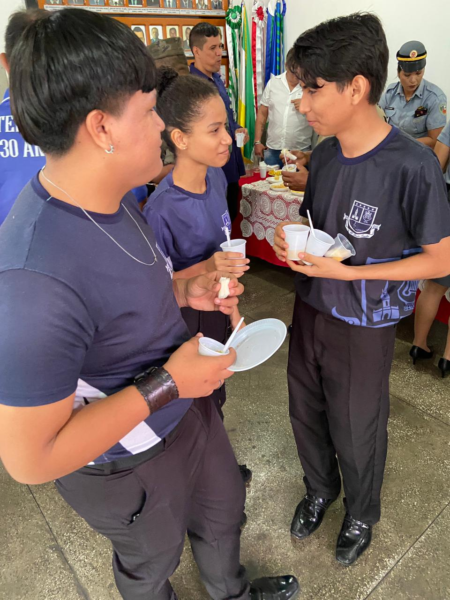
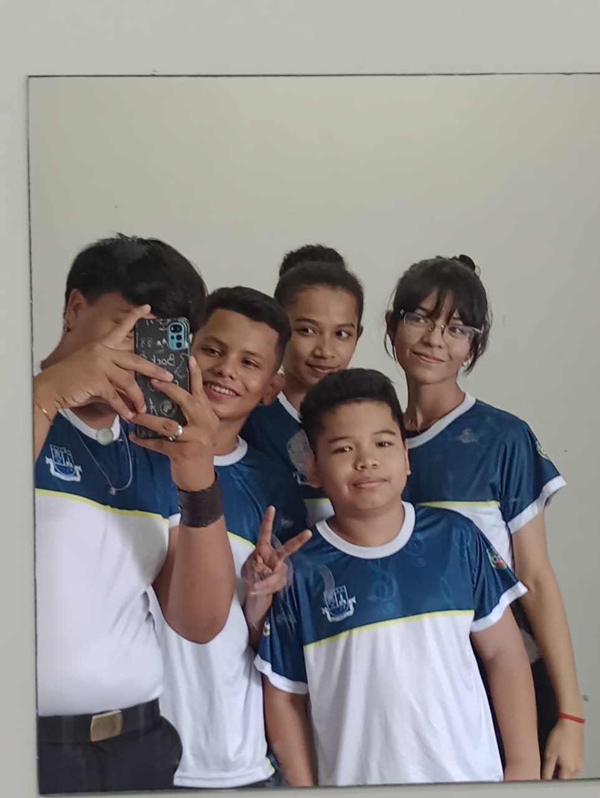
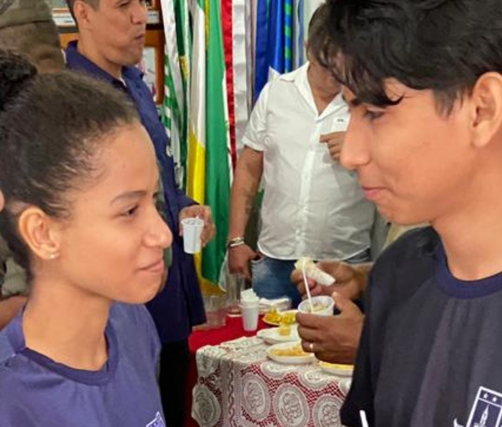
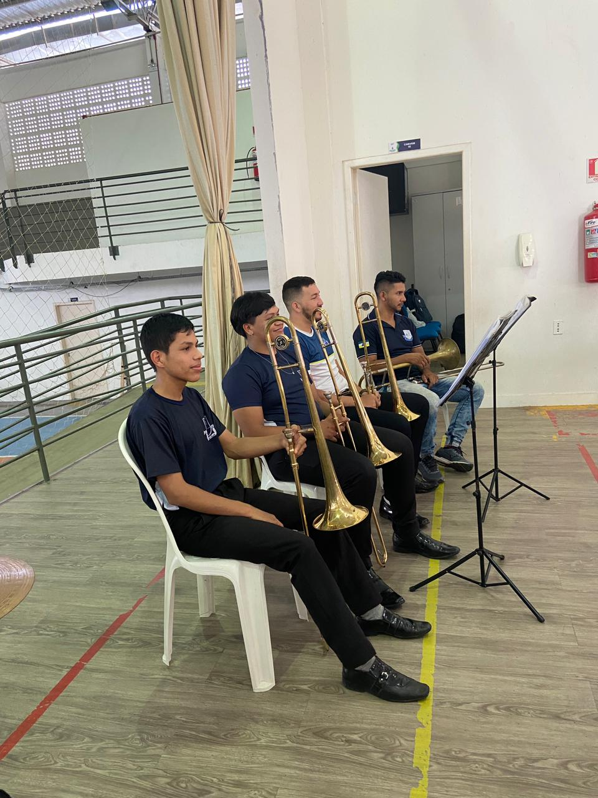
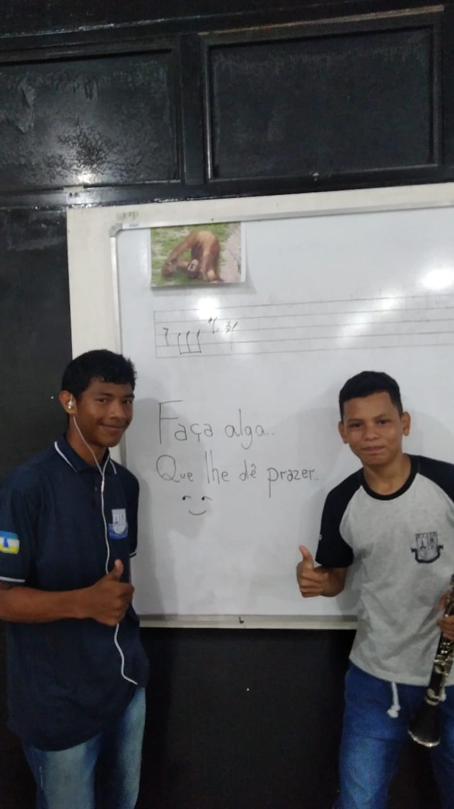
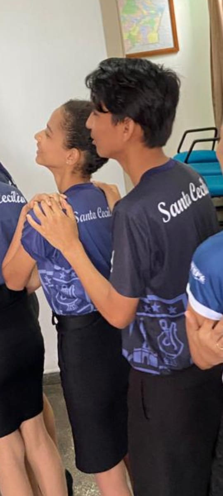
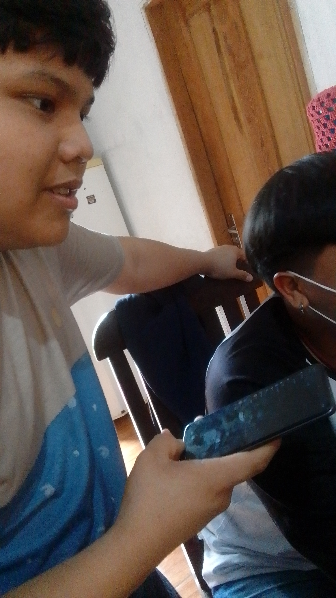
O Comparsa Jonilton (Pratinho) precisou se ausentar da banda para poder estudar, mas ele ainda vai voltar
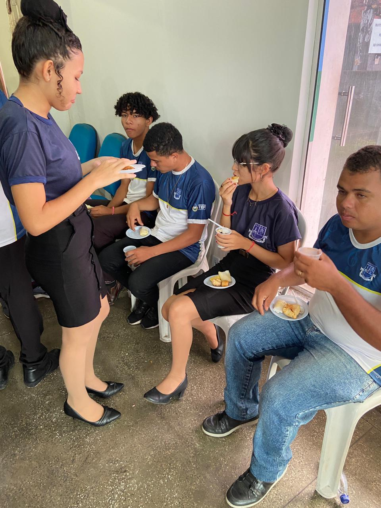
A Comparsas Milly sofreu um acidente que a deixou muito machucada, mas elas está bem
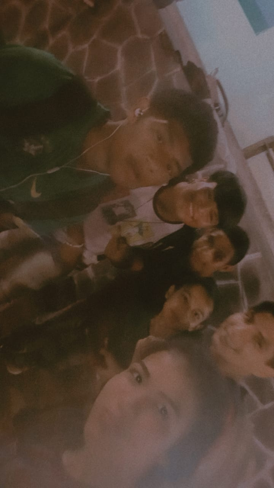
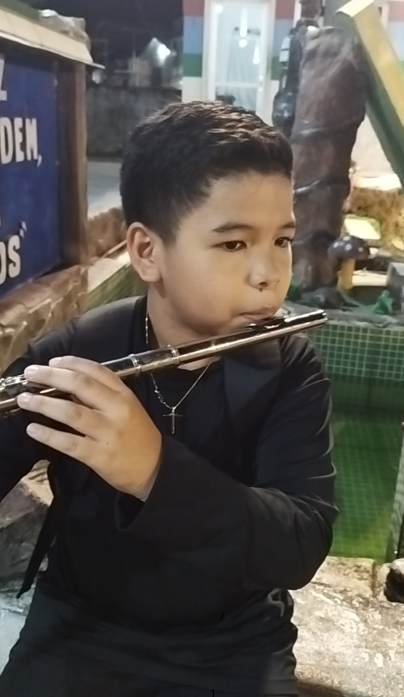
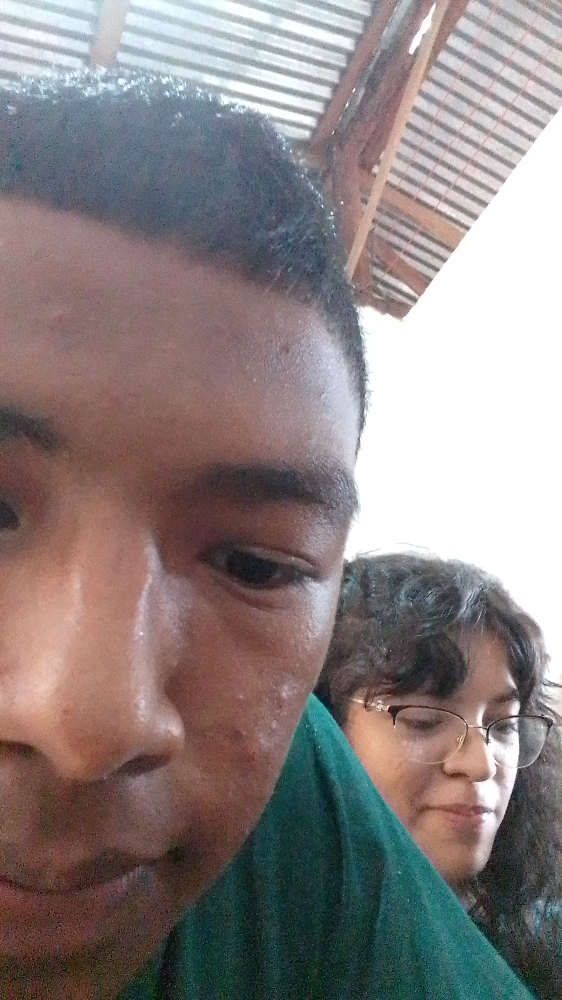
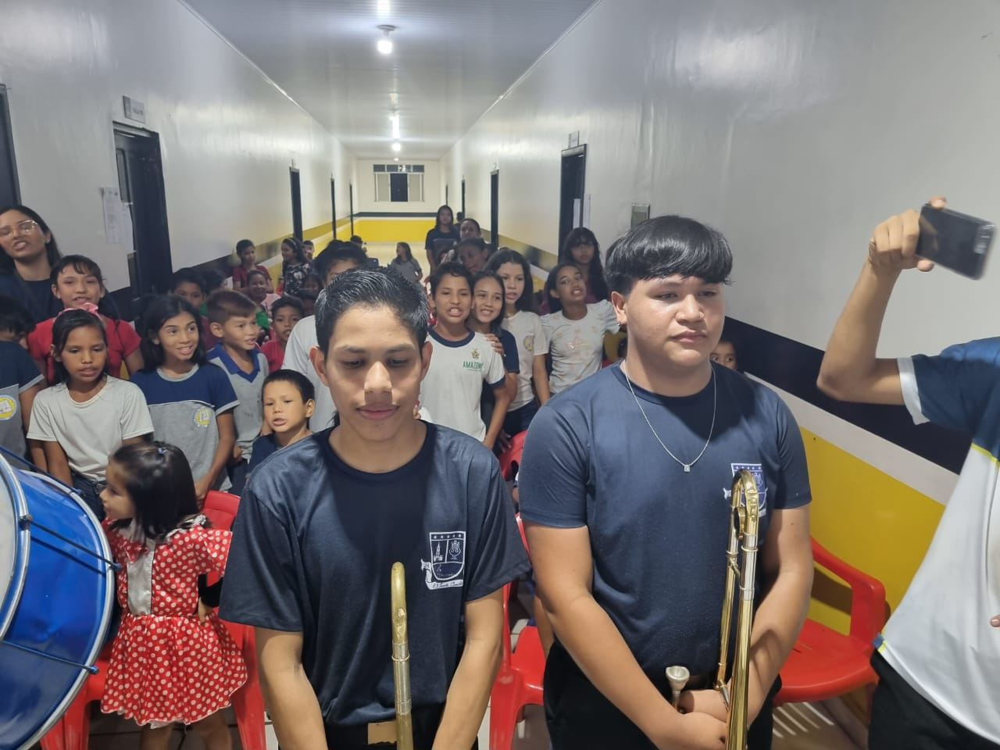

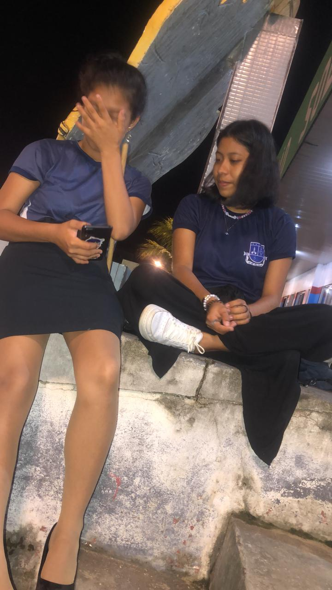
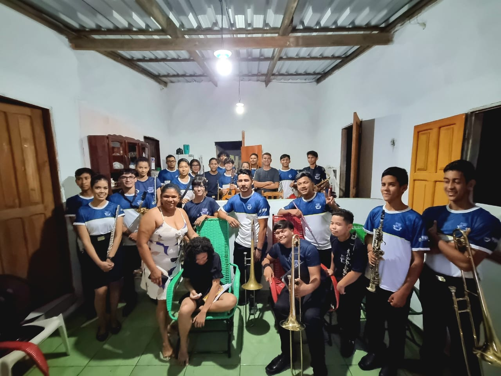